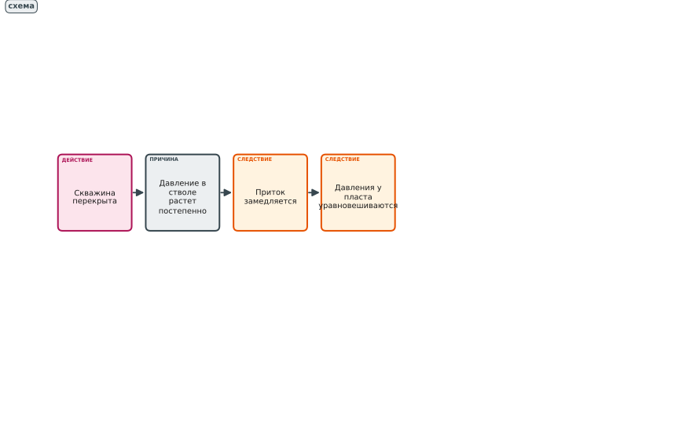
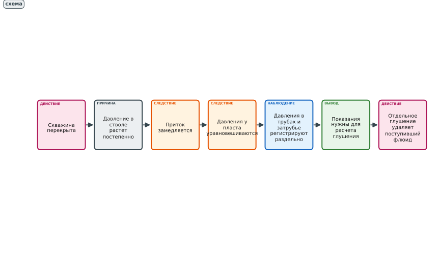

Перекрытие герметизирует скважину, но приток прекращается не мгновенно.
Глушение — отдельный этап, на котором удаляют уже поступивший флюид.
Пороговая идея. Отличить прекращение притока при перекрытии от удаления притока при глушении. модель
Анимация: как это происходит


1 / 8
Почему перекрытие не останавливает приток мгновенно?
Допущения: Условная схема; блоки не задают временной масштаб или размеры оборудования..
Как это работает
Механизм
Приток уменьшается постепенно из-за сжимаемости заполняющей жидкости. Давление в стволе растет. Приток замедляется. В описанном балансе он прекращается при равенстве пластового давления сумме давления у устья и гидростатического давления. стр. 314
«Интенсивность притока снижается не мгновенно, а постепенно, за счет сжимаемости жидкости, заполняющей скважину.»
«Приток жидкости замедляется по мере возрастания давления в стволе скважины и полностью прекращается, когда сумма давления нагнетания жидкости на устье скважины и гидростатического давления жидкости в скважине становится равной пластовому давлению.»
Практика
Для диагностики нужны давления в трубах и кольцевом пространстве. Показания помогают оценить пластовое давление, характер флюида, противодавление через штуцер и плотность раствора глушения. стр. 314
«При таких ситуациях очень важно знать давление, возникшее в бурильных трубах и кольцевом пространстве скважины.»
«К этим параметрам относятся пластовое давление, характер выбрасываемой пластовой жидкости, необходимое противодавление, которое надо создать через штуцер (когда начинается циркуляция для контролирования скважины), плотность раствора для глушения скважины.»
Нюансы
Расчет основан на обеспечении необходимого забойного давления при глушении. Автор разделяет перекрытие и глушение с удалением притока. стр. 314
«Эти параметры выбирают исходя из необходимости создания на забое давления, которое при глушении скважины должно превышать пластовое давление, и давление в нагнетательной линии насосов в начале циркуляции.»
«Ликвидацию проявлений (выбросов) производят в два этапа: перекрытие скважин и глушение скважин с удалением жидкости притока из скважины.»
Последовательность
Сначала перекрыть скважину. Затем дождаться затухания притока при росте давления. В конце отдельно удалить поступивший флюид при глушении. стр. 314
схема
Схема: как перекрытие прекращает приток.
Класс B · схема · нарисовано кодом · стр. 314
Цифры и условия
Давление в стволе растет. стр. 314
Приток замедляется. стр. 314
В описанном балансе он прекращается при равенстве пластового давления сумме давления у устья и гидростатического давления. стр. 314
Частая ошибка модель
✗Ошибка: Перекрытие сразу удаляет флюид, который уже вошел в ствол.
✓На самом деле: Перекрытие и глушение — разные этапы: после перекрытия регистрируют давления, а поступивший флюид затем вытесняют.
Что это значит для данных модель
Отличить прекращение притока при перекрытии от удаления притока при глушении.
Вход
Текст главы и контекст текущей операции
Выход
Объяснение признака или этапа
Где ломается
Один сигнал не доказывает причину без контекста.
гипотеза Показания сопоставимы только при известном режиме работ.
Где здесь ручной труд специалиста
Входные данные
Текст главы и контекст текущей операции
Ручные шаги
Сверить показания и журнал операции.
Точки суждения
Отличить прекращение притока при перекрытии от удаления притока при глушении.
Время
Данные о длительности ручной сверки в главе не приведены.
Типичные ошибки
Один сигнал не доказывает причину без контекста.
Аналогия модель
Изоляция инцидента до восстановления работы.
Где аналогия перестаёт работать: Жидкость остается в физическом стволе; на стенки и устройство действуют нагрузки.
Как это делается сейчас модель
За рабочими решениями обращаются к действующему регламенту и ответственному специалисту; этот узел объясняет учебный пример.
Глубже
Граница ИТ-аналогии модель
Жидкость остается в физическом стволе; на стенки и устройство действуют нагрузки.
Новые понятия
Перекрытие скважины (well shut-in)
Герметизация скважины для контроля проявления и регистрации давления. модель
Глушение скважины (well kill)
Восстановление контроля над скважиной путем вытеснения притока и создания необходимого давления на забое. модель
Пластовое давление (formation pressure)
Давление флюида в пласте. модель
Гидростатическое давление (hydrostatic pressure)
Давление, создаваемое весом столба жидкости. модель
Кольцевое пространство (annulus)
Зазор между колонной и стенкой ствола или наружной колонной. модель
Противодавление (backpressure)
Давление, создаваемое в системе для противодействия притоку или течению. модель
Штуцер (choke)
Устройство для дросселирования потока и создания противодавления. модель
Проверь себя
Несколько ответов
Верный ответ: Давление в бурильных трубах; Давление в кольцевом пространстве
Показания помогают оценить пластовое давление, характер флюида, противодавление через штуцер и плотность раствора глушения. Где это в тексте (стр. 314) →
Порядок
Расставьте этапы от перекрытия до удаления притока.
Перетащите пункты (мышью или пальцем за ⠿) или двигайте кнопками ↑ ↓.
⠿Дождаться затухания притока при росте давления
⠿Перекрыть скважину
⠿Отдельно удалить поступивший флюид при глушении
Верный ответ: Перекрыть скважину → Дождаться затухания притока при росте давления → Отдельно удалить поступивший флюид при глушении
Все утверждения шага с дословной цитатой автора и страницей книги (по PDF).
Приток уменьшается постепенно из-за сжимаемости заполняющей жидкости. наблюдение
«Интенсивность притока снижается не мгновенно, а постепенно, за счет сжимаемости жидкости, заполняющей скважину.»
В описанном балансе приток полностью прекращается при равенстве суммы давления у устья и гидростатического давления пластовому. наблюдение
«Приток жидкости замедляется по мере возрастания давления в стволе скважины и полностью прекращается, когда сумма давления нагнетания жидкости на устье скважины и гидростатического давления жидкости в скважине становится равной пластовому давлению.»
Для диагностики нужны давления в трубах и кольцевом пространстве. наблюдение
«При таких ситуациях очень важно знать давление, возникшее в бурильных трубах и кольцевом пространстве скважины.»
Показания помогают оценить пластовое давление, характер флюида, противодавление через штуцер и плотность раствора глушения. наблюдение
«К этим параметрам относятся пластовое давление, характер выбрасываемой пластовой жидкости, необходимое противодавление, которое надо создать через штуцер (когда начинается циркуляция для контролирования скважины), плотность раствора для глушения скважины.»
Расчет основан на обеспечении необходимого забойного давления при глушении. наблюдение
«Эти параметры выбирают исходя из необходимости создания на забое давления, которое при глушении скважины должно превышать пластовое давление, и давление в нагнетательной линии насосов в начале циркуляции.»
Автор разделяет перекрытие и глушение с удалением притока. наблюдение
«Ликвидацию проявлений (выбросов) производят в два этапа: перекрытие скважин и глушение скважин с удалением жидкости притока из скважины.»
Исходный текст урока
Стр. 312 · 4.2.14. ЛИКВИДАЦИЯ НЕФТЕГАЗОПРОЯВЛЕНИЙ ПРИ БУРЕНИИ СКВАЖИН
Такая компоновка устьевого оборудования позволяет ликвидировать осложнения, которые могут возникнуть в скважине как при вскрытии, так и при испытании пластов. Так, например, при возникновении нефтегазопроявлений необходимо как можно раньше перекрыть скважину, а затем заглушить образовавшийся приток (выброс). После того как скважина перекрыта, прекращается дальнейшее поступление (пластовой) жидкости в скважину. Интенсивность притока снижается не мгновенно, а постепенно, за счет сжимаемости жидкости, заполняющей скважину. Приток жидкости замедляется по мере возрастания давления в стволе скважины и полностью прекращается, когда сумма давления нагнетания жидкости на устье скважины и гидростатического давления жидкости в скважине становится равной пластовому давлению.
Стр. 314 · 4.2.14. ЛИКВИДАЦИЯ НЕФТЕГАЗОПРОЯВЛЕНИЙ ПРИ БУРЕНИИ СКВАЖИН
При таких ситуациях очень важно знать давление, возникшее в бурильных трубах и кольцевом пространстве скважины. Эти давления позволяют определить ряд важных параметров, которые затем используются при ликвидации возникших осложнений. К этим параметрам относятся пластовое давление, характер выбрасываемой пластовой жидкости, необходимое противодавление, которое надо создать через штуцер (когда начинается циркуляция для контролирования скважины), плотность раствора для глушения скважины. Эти параметры выбирают исходя из необходимости создания на забое давления, которое при глушении скважины должно превышать пластовое давление, и давление в нагнетательной линии насосов в начале циркуляции. Ликвидацию проявлений (выбросов) производят в два этапа: перекрытие скважин и глушение скважин с удалением жидкости притока из скважины.